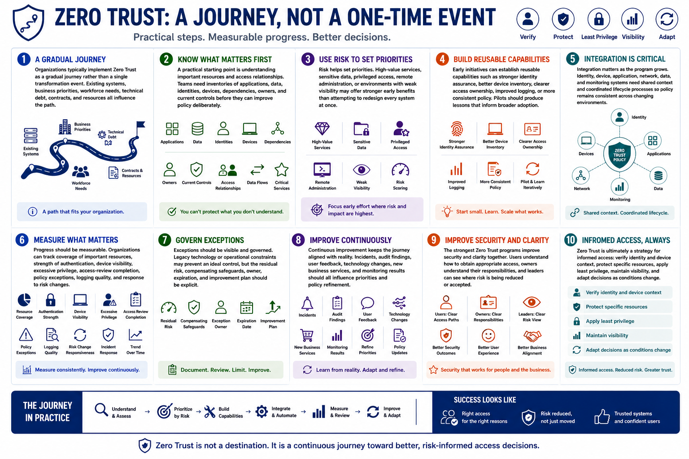

What Is Zero Trust?
Building a Zero Trust Journey
Connecting to LMS... Progress: in progress
Version 1.0 | Date: 2026-06-16 | Educational overview of Zero Trust concepts.

Narration
Organizations typically implement Zero Trust as a gradual journey rather than a single transformation event. Existing systems, business priorities, workforce needs, technical debt, contracts, and resources all influence the path.
A practical starting point is understanding important resources and access relationships. Teams need inventories of applications, data, identities, devices, dependencies, owners, and current controls before they can improve policy deliberately.
Risk helps set priorities. High-value services, sensitive data, privileged access, remote administration, or environments with weak visibility may offer stronger early benefits than attempting to redesign every system at once.
Early initiatives can establish reusable capabilities such as stronger identity assurance, better device inventory, clearer access ownership, improved logging, or more consistent policy. Pilots should produce lessons that inform broader adoption.
Integration matters as the program grows. Identity, device, application, network, data, and monitoring systems need shared context and coordinated lifecycle processes so policy remains consistent across changing environments.
Progress should be measurable. Organizations can track coverage of important resources, strength of authentication, device visibility, excessive privilege, access-review completion, policy exceptions, logging quality, and response to risk changes.
Exceptions should be visible and governed. Legacy technology or operational constraints may prevent an ideal control, but the residual risk, compensating safeguards, owner, expiration, and improvement plan should be explicit.
Continuous improvement keeps the journey aligned with reality. Incidents, audit findings, user feedback, technology changes, new business services, and monitoring results should all influence priorities and policy refinement.
The strongest Zero Trust programs improve security and clarity together. Users understand how to obtain appropriate access, owners understand their responsibilities, and leaders can see where risk is being reduced or accepted.
Zero Trust is ultimately a strategy for informed access: verify identity and device context, protect specific resources, apply least privilege, maintain visibility, and adapt decisions as conditions change.